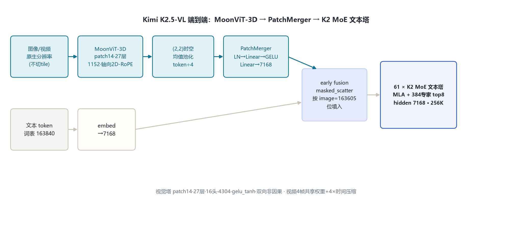
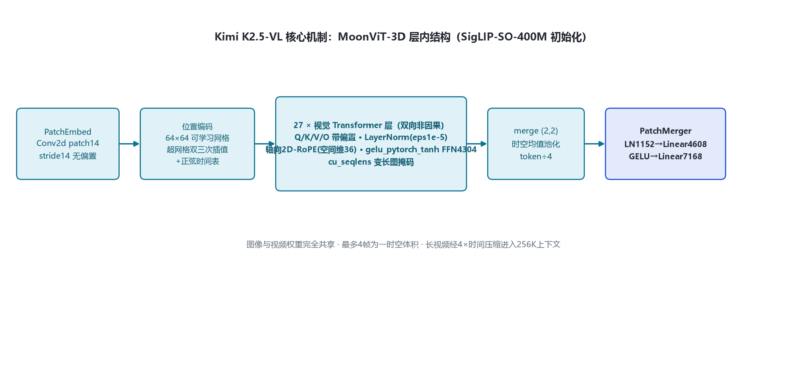
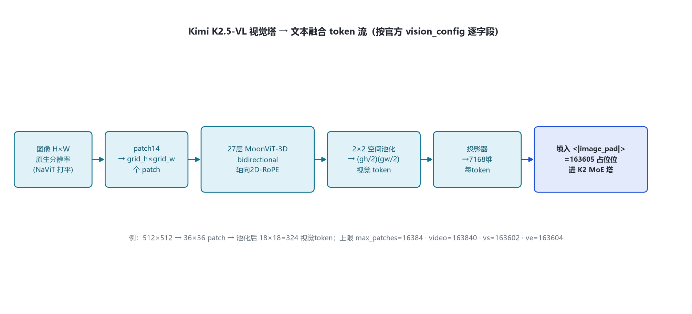

命名核验：官方 HF 组织 2026-10-31 实测无独立「Kimi-K2-VL」仓库；K2 代多模态即 moonshotai/Kimi-K2.5（KimiK25ForConditionalGeneration，config 内嵌完整 vision_config），NVIDIA 文档称 "Kimi-K25-VL"。本目录聚焦其视觉塔与多模态 token 流，文本塔与 kimi_k2_5 同源。
K2.5-VL 为「MoonViT-3D 视觉编码器 + PatchMerger MLP 投影器 + K2 MoE 文本塔」三段式，沿袭 Kimi-VL 设计原则（论文 §4.2）。视觉塔初始化自 SigLIP-SO-400M，图像/视频权重完全共享。
| 部件 | 字段 | 取值 | 来源 |
|---|---|---|---|
| 视觉塔 | model_type / patch | kimi_k25_vision / 14 | 官方 config vision_config |
| 视觉塔 | hidden / 层数 / 头 / FFN | 1152 / 27 / 16 / 4304 | 官方 config |
| 视觉塔 | 激活 / RoPE | gelu_pytorch_tanh / axial 2D-RoPE | config + configuration_kimi_k25.py:173 |
| 视觉塔 | 位置编码 | 可学习 64×64×4（h×w×time） | 官方 config |
| 投影器 | 类型 / merge | patchmerger / (2,2) 时空均值 | 官方 config |
| 投影器 | text/mm hidden | 7168 / 1152 | 官方 config |
| 文本塔 | 层/hidden/MoE | 61 / 7168 / 384+1·top8 | 官方 config text_config |
| 特殊 token | image/video/vs/ve | 163605 / 163840 / 163602 / 163604 | config + configuration_kimi_k25.py:25 |

原生分辨率视觉编码器，NaViT patch packing，图像/视频权重完全共享；初始化自 SigLIP-SO-400M。
视觉 token 时空 4× 压缩并对齐到文本 hidden 7168。
与 K2.5/K2-Thinking 同构：MLA + 384 专家 top-8。
视觉塔 caption-loss 对齐 Moonlight-16B-A3B（~1T）→ 短训投影器 → 联合预训练 ~15T 视-文 token → YaRN 32K→262144。
视觉塔 Kimi_K25VisionModel（modeling_kimi_k25.py:469-551）：Conv2d patch14 无偏置 → 可学习 64×64 网格位置编码（超网格双三次插值，视频加正弦时间表）→ 27 层双向视觉 Transformer（Q/K/V/O 带偏置、LayerNorm eps1e-5、轴向 2D-RoPE 空间维 36、gelu_tanh FFN4304）→ final LN → (2,2) 时空均值池化。文本塔解码层与 K2.5 一致（见 kimi_k2_5 §3）。

不做固定 resize、不切子图拼接；按总 patch 预算 max_patches=16384 与单边预算等比缩放到 patch 整数倍（image_processing_kimi_k25.py:50-97），打平 concat，cu_seqlens 变长掩码。
(2,2) 空间+时间均值池化 token ÷4；投影器 LN1152→Linear4608→GELU→Linear7168（:560-564）。投影器自核算约 54M。
投影后视觉特征按 image=163605 / video=163840 占位位替换进 embedding（:686-720）；单帧视频时间位置表用零行。
最多 4 帧为时空体积，与图像共享注意力；时间均值池化 4× 压缩，同上下文处理 4× 长视频（论文 §4.2）。
视觉塔：双向非因果全注意力，Q/K/V/O 带偏置，轴向 2D-RoPE（空间维 36），cu_seqlens 变长掩码（:307-391）。文本塔：MLA 全因果注意力（kv_lora 512/q_lora 1536），与 K2.5/K2-Thinking 同。
图像 H×W → patch14 → grid_h=H/14, grid_w=W/14；经 2×2 空间池化后视觉 token 数 = (grid_h/2)(grid_w/2)，每个投影到 7168 维。512×512 例：36×36=1296 patch → 池化后 18×18=324 视觉 token。实际受 max_patches=16384 约束。

最多 4 帧一组时空体积，共享权重，时间均值池化 4× 压缩；vs=163602 起、ve=163604 收，中间 image=163605/video=163840 占位；视觉特征在 embedding 层 masked_scatter 填入，early fusion。
文本词表 163840；视觉四元组 163602/163605/163840/163604；bos=163584、eos=163585、pad=163839。上下文 262144（YaRN factor 64），视觉 token 与文本 token 共享该预算。
小尺寸 VL，文本塔 hidden 2048/27 层/64 专家 top-6，同系 MoonViT（patch14/27/1152/4304）；本目录视觉塔在其原则上扩展出 MoonViT-3D。
视觉塔换到 K2 的 7168/61 层 MoE 大文本塔，early-fusion 联合预训练；同架构亦用于 K2.6。
K2-Base/Instruct(-0905)、K2.5、K2.6、K2.7-Code、Kimi-K3、Kimi-Linear-48B-A3B、Kimi-VL-A3B-Thinking(-2506)、Moonlight-16B-A3B。